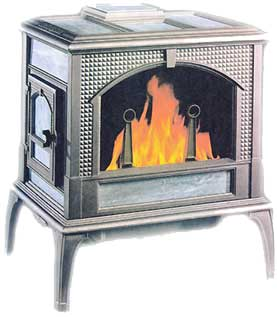
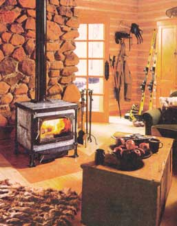
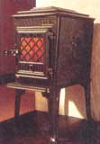
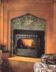
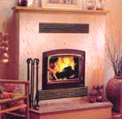
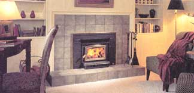
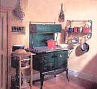
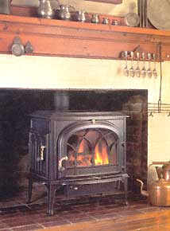

Whether you decide to make wood your primary heating fuel or just want to spend winter evenings around a warm, flickering fire, you'll need to choose from a bewildering array of options: elegant enameled woodstoves, high-efficiency fireplaces, furnaces or even cookstoves. Here's what you need to help you make the right choice, including a comprehensive list of stove models, sizes, prices and other details.
The benefits of home heating with wood are numerous: comfort, beauty, independence, security and environmental responsibility. Surely the most discussed advantage is the promise of cost savings compared with the mainstream alternatives. Although there are many variables involved, you can almost certainly save money by heating with wood if there are forests in your region and you don't live in a city. If the recent volatility of oil, gas and electricity prices provides a hint of the future, the savings could increase in the years ahead. As long as you enjoy managing the firewood supply and the fire, you will be a successful full-time wood burner.
I've not only heated with wood for nearly 30 years, wood burning also has been my life's work for almost as long. I've heated with rusted-out cookstoves, sooty furnaces and gleaming enameled cast-iron heaters. I've worked as a welder, stove designer, wood-energy bureaucrat, dealer, trainer and writer. And I've tried out eight different stoves in the 12 years since we built our present house.
The first decision you'll have to make is whether to shop for a central or space heater. The two main advantages of a central furnace or boiler is that it can maintain the entire house at an even temperature and keep the mess of firewood and ash out of sight in a utility room. But one big disadvantage is that the beauty of the fire is hidden behind a, steel door. Furnaces and boilers also tend to be large, crude and inefficient, which, unless your house is also large and inefficient, can mean a smoky, smelly, overheated home. In other words, furnaces and boilers work best when called upon to meet a big heating load like a very large or leaky house. It pains me to say this as one who started his wood-heat career working on central wood furnaces, but I don't usually recommend furnaces and boilers because they have not kept pace technologically with the advances of woodstoves or of North American housing.
If you live in a reasonably well-constructed house of average size built in the last 30 years or so, you probably can heat the whole place with a single woodstove, provided it is located and installed right. The woodstove is by far the most popular form of wood heating. Why? Because stoves are the most economical and flexible option, and country folks, being practical and thrifty, have figured this out. What they've found is a stove located in the living area keeps that space cozy while other parts of the house, such as the basement and bedrooms, stay cooler. This selective space heating suits people who like their bedrooms cooler, and they save a lot of energy in the bargain. While there are other options within the space heating category, I will focus on woodstoves because of their overwhelming popularity.
When you go shopping for a woodstove you will have two main sources of information to help with your decision. First is the manufacturer's literature that gives performance specifications; I'll explain each specification below, and to help you compare different stoves, each model's specifications and price are shown in the chart. Second is the advice you receive from the various stove dealers you visit. The experienced dealer wants you to be so happy with your purchase that you will tell your friends so they will buy, too. That means the good dealer will make every effort to meet your objectives with the right stove since no dealer wants you to come back complaining that the stove is too big, too small or otherwise unsuitable. A good dealer can be your most valuable resource, but beware of dealers who don't heat their own houses with wood and don't have operating woodstoves in their showrooms-their advice might not be worth much.
Once you collect a few stove brochures you'll notice the standard pieces of information that are provided. Some of these can help you with your purchase decision. Let's go through some of the most useful ones.
Always locate the stove in the space you want to keep the warmest. For most households this is the central area containing the living room, dining room and kitchen. Don't make the mistake of "hooking up" the stove to an unused chimney in an unfinished basement, hoping the heat will rise to the living area. Some heat will rise to the upper level, of course, but you will probably still end up with a 90-degree basement and a 60-degree living room. Woodstoves are manually controlled and should be located where people are around to monitor their performance and adjust the air control as needed. Families who heat most successfully with woodstoves locate them in the central area where they eat, relax and entertain.
Install a new chimney straight up through the warm space of the house, not out a wall and up the outside. The physics of why this is important is too complicated to get into here, but take it from me, outside chimneys are the single biggest reason why woodstoves smoke into houses. If you never want your stove to smoke when you light a fire; or to stink when it is not in use; put the chimney inside. Think of the chimney as the engine that creates the draft and drives the wood-heat system. To enjoy trouble-free wood burning you need a good chimney, and the best performing chimneys run straight up.
The two main material options are cast iron or welded steel. There is no performance difference between them, so the decision has to do with aesthetics and price. Graceful curves and artistic relief patterns make cast-iron stoves pleasing to the eye, rather like fine furniture for home heating. You'll pay a premium price, however, and cast stoves do need to be rebuilt every few years to seal the joints between panels, so air leakage will not allow the fire to burn out of control. Welded steel stoves are plainer, but some are attractive enough for a well-appointed living room.
In terms of durability, I'm not convinced there is much difference. Cast stoves used to have the edge because any part that failed from heat stress could be replaced easily. But now, having learned their lessons, the reputable steel stove makers have designed their products so that the highly stressed internal parts are replaceable. This is one area to watch out for when shopping. Sometimes cheap stoves are not designed for years of continuous winter use, so it is wise to ask the dealer to show you which parts are replaceable.
The debate over catalytic versus noncatalytic combustion has been going on for almost 20 years. Both approaches have proved effective, but there are performance differences. Catalytic combustion, in which smoky exhaust gases are passed through a catalyst-coated ceramic honeycomb buried deep inside the stove where they ignite and burn, tends to produce a long, steady heat output. All catalytic stoves have a lever-operated catalyst bypass damper, which is opened for starting and loading. This tends to make the operation of these stoves a little more complicated. The catalytic element degrades over time and must be replaced, but its durability is largely in the hands of the stove user. In the care of a conscientious user, the catalyst can last more than six seasons, but if the stove is overfired, trash is burned and maintenance is nonexistent, the catalyst may fail in as little as two years.
As its name implies, noncatalytic combustion does not use a catalyst, but instead creates a good environment for combustion right in the firebox. Three key features create this environment: firebox insulation, a baffle to divert gas flow and preheated combustion air introduced through small holes all around the upper part of the firebox. "Noncats" tend to produce a somewhat "peakier" heat output curve, but are prized by their users for the beautiful fire they create. Good conditions for combustion include high temperatures, so the baffle and other internal parts will need replacement from time to time as they deteriorate with the heat.
So, which is the better stove, a "cat" or a noncat? It would appear the market is slowly turning in favor of noncats, as some manufacturers actually have switched in that direction. Still, some of the most popular high-end stoves continue to use catalytic combustion. Both options have their benefits and limitations, as well as legions of loyal users who swear that their (cat or noncat) is far better than those silly (cats or noncats).
Masonry heater
• burns fast and stores heat for later use
• clean burning and reasonably high efficiency
•specialized operation: a new fire must be built for each heating cycle
• high initial cost
Cookstove
• EPA exempt, so efficiency tends to be low
• not good for serious space heating-great for cooking
Back in the late 1980s, the U.S. Environmental Protection Agency (EPA) established a mandatory smoke emission limit for woodstoves of 7.5 grams of smoke per hour (g/h). This regulation was necessary because older stoves were so smoky they were adding to air pollution problems in some regions. Today, all woodstoves and fireplace inserts must be tested and meet this limit, and many are certified for emissions down in the 1 to 4 g/h range.
On average, the new stoves are about 30 percent more efficient than the old box, potbelly or step stoves of yesteryear, and even most of today's central heaters. That's 30 percent less cost if you buy firewood, or 30 percent less cutting, hauling and stacking if you cut your own. Although this higher efficiency is a byproduct of mandatory emission limits, it has made the EPA rules a winner for both the environment and stove users.
Unfortunately, none of the really useful performance ratings shown on stove brochures (such as efficiency, heat output, heating capacity and burn time) are standardized and regulated, so they can't always be trusted or compared one to the other. For example, the EPA does not require stove efficiencies to be reported, but for obscure reasons assigns default figures of 63 percent for noncats and 72 percent for cats. Some manufacturers have paid for independent efficiency tests and show the results on their promotional brochures. But because efficiency test methods have not been standardized and regulated, you can't be sure the figures are based on the same tests and calculations. On the other hand it appears that all EPA certified stoves are more than 60 percent efficient and some can deliver around 80 percent of the fuel's potential heat to the house. This is far better than the low-tech uncertified options, many of which are in the 50 percent range and lower. (An overall efficiency higher than 80 percent is not desirable because the resulting low exhaust temperature means weak draft and the risk of water vapor condensation, which damages the chimney.)
Most manufacturers list a maximum heat output in British Thermal Units (BTUs). For popular stoves this falls in the 25,000 to 80,000 BTU range. But this figure can be misleading. First, the full output of a stove should not be used often since continuous high firing can do serious damage to the stove's innards. Second, the average medium-size house needs only 10,000 to 20,000 BTUs per hour of continuous heating power, even during cold weather. Finally, some manufacturers use the heat output rate from EPA testing, which uses softwood fuel, and others use the results of their own tests which can produce a considerably higher peak output depending on the fuel used. Still, a comparison of the maximum heat output figures shown on the chart will give you some idea of relative heating power among various models.
Stove makers always state how many square feet of space the unit will heat. Some of them wisely give generous ranges like 1,000 to 2,000 square feet or suggest the maximum area the unit will heat. The reason for the big range and vague figures is that a particular stove might heat a 2,000 square-foot house in Georgia, but only a 1,000-square-foot house in the Dakotas due to the climate difference. An old house also might have twice the heat loss of a new house of the same size in the same climate zone. And finally, a stove burning softwood, such as spruce, will put out less heat per firebox load than it would burning a hardwood, such as maple.
In practical terms, considering all the variables, woodstoves come in three sizes: small stoves, for heating a large room or a seasonal cabin; medium, for heating a small- to medium-size house; and large stoves, for heating somewhat larger or leakier houses. Correct sizing of stoves for particular objectives and conditions is one area where the advice of an experienced woodstove specialist is particularly useful.
How long will a given stove burn on a single load of wood? The only reasonable answer is: It depends. Burn time depends on wood species and moisture content, and on how much heat is needed during the burn. My experience is that any medium or large stove sized correctly based on all the issues discussed here will give a reliable overnight burn with plenty of coals remaining to kindle a fire in the morning. Stoves in the small category may or may not give an overnight burn, but they tend not to be used for whole-house primary heating.
For convenient loading, the firebox should be about 3 inches bigger than your longest pieces of firewood. Don't be misled into thinking a stove that can handle 20-inch firewood is really bigger or better than one that can take up to 18-inch logs. The standard firewood length for stoves is 16 inches, mostly because it is the most practical length handling. Any guy who claims it is easy to lift, stack and load 20-inch firewood is bigger and stronger than I am. I'm also aware many women are serious users of woodstoves, and I suspect that, on average, their wrist and forearm strength is closer to my own than to that of a burly logger.
There are many other features you might wish to consider. These include whether the stove can be operated with open doors and a fire screen in place (see footnote on the chart ), whether it has an ash pan, a cooking surface, and aesthetic matters like color options, plated doors and trim, and pedestal versus legs. None of these affect heating performance but can influence your enjoyment of the stove.
For lots of additional great information about wood heat, chimneys, firewood, etc., go to www.woodheat.org, a nonprofit Web site supervised by John Gulland and other wood heat experts.
1. It's a renewable energy resource
Wood is energy from the sun, stored by the tree as it grows. When you burn wood you are releasing this stored energy. In the dark of winter, it's like having a bit of summer sun on your hearth.
2. An Earth- friendly choice
When fuels burn they release carbon dioxide, one of the greenhouse gases responsible for global warming. Trees absorb carbon dioxide as they grow, so when you heat with wood, the carbon dioxide is released, then absorbed again by young trees. Because trees recycle carbon dioxide, wood burning just warms you, not the globe.
3. You're in charge
Stop writing checks every month to the energy utilities. Do you really want to leave something as important as staying warm in the hands of a faceless corporation?
4. No more freezing in the dark
When a storm interrupts the electrical supply, all the conventional heating systems are useless, but the woodstove keeps you warm and cozy and safe. Now a power failure isn't so much of a drag: You get to use the candles.
5.Warms you like no other
The radiant heat from a stove or fireplace is like the rays of the sun. It warms you through and through.
6. The romance of the flame
The soft glow of firelight is the favorite setting for an intimate conversation. It's the place where friends and family gather to talk and laugh in comfort.
7. Raise your energy I.Q.
Each log you place on the fire is a visual reminder of the environmental impact of keeping your family warm. It's the wood heat way of knowing.
8. Heat a space, save some energy
That stove or fireplace in the living room keeps you warm and cozy in the place you spend your time. The basement and bedrooms stay cool. Regardless of what you pay for energy, space heating with wood clips 25 percent right off the top.
9. Invest in your community
Spend a buck on oil, natural gas or electricity and you feed a corporate giant. Spend a buck on firewood and you feed a neighbor.
10. It's cheaper!
Wood is the cheapest heating fuel you can use if you don't live in a large city. Some people actually think the only reason we heat with wood is to save money. Poor souls, they miss so much of what is good in life .
|
 Most stoves now feature airwashed glass doors. This is Woodstock Soapstone's Keystone stove. |
 This little Jotul stove is just $599 (2001). |
 This is the Energy King high-efficiency Silhouette fireplace model. |
|
 This Pacific Energy Vista fireplace insert can transform a traditional open fireplace into an efficient wood heater for your home. |
 This is the beautiful Waterford Stanley cookstove from Regency Fireplace Products International. |
 This Jotul F500 woodstove is mounted into a traditional fireplace. |
|
 |
 |
|